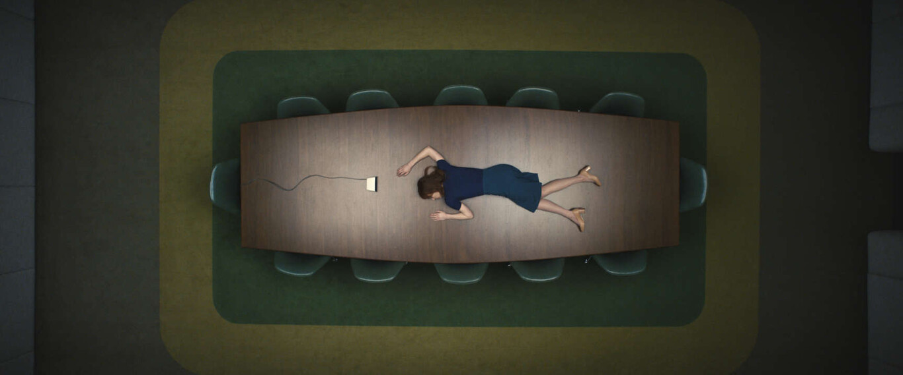

'Separación': una inquietante y efectiva distopía laboral de Apple TV+ que se deleita más en su alegoría que en la historia
Uno de los tropos habituales de la ciencia ficción futurista es la del corporativismo salvaje. Futuros dominados por multinacionales en los que los trabajadores son meros engranajes en la cadena de producción. De esta tradición bebe 'Separación' ('Severance'), una inquietante serie "distópica" de Apple TV+.
Dirigida por Ben Stiller ('Fuga en Dannemora') y creada por Dan Erickson, este thriller laboral parte de una premisa tan interesante como tétrica: ¿y si la humanidad fuese capaz de separar, seccionar quirúrgicamente, su vida laboral de la personal?
No es simplemente un método para dejar de preocuparnos automáticamente de lo que tengamos en casa en cuanto ocupemos nuestro puesto —eso que siempre se dice de dejar los problemas de puertas para afuera—, sino de no saber absolutamente nada de lo que pasa fuera de tu oficina cuando estás en el trabajo y viceversa, no saber nada del trabajo cuando estás en casa.
Dentro y fuera
La serie comienza con Mark (Adam Scott), recién ascendido como director del equipo de "refinación de macrodata" de Lumon Industries después de la baja repentina de su anterior jefe de equipo. Algo que empezará a levantar sospechas sobre qué pasa realmente en la empresa.
El hecho de que Mark sea el único del que veamos a su outie (es decir, su persona externa a la oficina) será lo que nos ayude a montar el puzle del misterio de una serie que está decidida a humanizar todo lo que pueda a los innies (los de la oficina), que no son conscientes de abandonar nunca el trabajo aunque cumplen con su horario de 9 a 17.
Más que a 'Black Mirror' (podría ser perfectamente un episodio de la antología), el estilo de 'Separación' recuerda bastante al de la notable 'Homecoming', en ese punto de thriller ambientado en el trabajo al que acompaña una estética límpida. El diseño de producción se deleita en un aspecto retro, simetrías, oficinas diáfanas inmaculadas y un largo etcétera.
A eso le acompaña un ritmo tranquilo, de querer enfatizar lo anodino del día a día, del trabajo, con esos silencios y pausas. Está hecha a un fuego quizás demasiado lento pero efectivo y que inquieta con el panorama que dibuja.
Otra cosa es que el misterio o la trama, más allá de ese despertar de los personajes y la revolución que ello supone sea realmente interesante. O, por lo menos, tanto como para llevarnos a través de nueve episodios que, si bien han ido in crescendo, acusan de ciertos tropiezos en el desarrollo. Incluso podríamos decir que los primeros compases son un tanto aburridos.
Creo, sobre todo, que el problema radica en el hecho de que Erickson y su equipo de guionistas no quieran salir del punto de vista del personaje de Adam Scott, el único al que vemos tanto a su innie como a su outie. Su historia exterior no me resulta tan interesante como, digamos, lo poco que podemos intuir de la de Hellie (Britt Lower).
Una sátira a la cultura corporativa

No podemos negar que, a pesar de estar enclavado en un drama, toda la serie tiene cierto sentido del humor en forma de sátira. No voy a entrar en muchos detalles porque sale más o menos a mitad de la temporada, pero hay un punto en el que el "innie" de Mark queda fascinado por un libro de psicología barata repleta de frases típicas de Instagram.
Un punto de sátira de brocha gorda que acompaña esta historia blackmirroriana que lanza muchos dardos hacia la cultura corporativa. Hay cierto halo de religión y de culto al líder en el edificio de Lumon. Incluso la relación entre jefes (Patricia Arquette) y una junta invisible e inaudible o la presencia de todo un museo refuerza esa idea.
Por lo demás, la serie está plagada de situaciones sensibles y emocionales en los que cada vez empatizamos más con gente reducida a ser títeres, sin libertad real, encerrados en algo que, sin ser conscientes, es una pesadilla. Solo hay que ver, por ejemplo, la traumática aceptación de la realidad de Hellie
En resumidas cuentas, 'Separación' es un inquietante thriller laboral distópico que quizás se deleita más de lo que debe en la forma y en la alegoría que en la historia. Esto causa que tarde en despegar y en llamar realmente la atención en una trama esbozada sin demasiado pulido.
Fuente: ESPINOFF